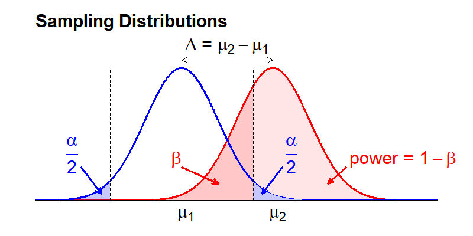
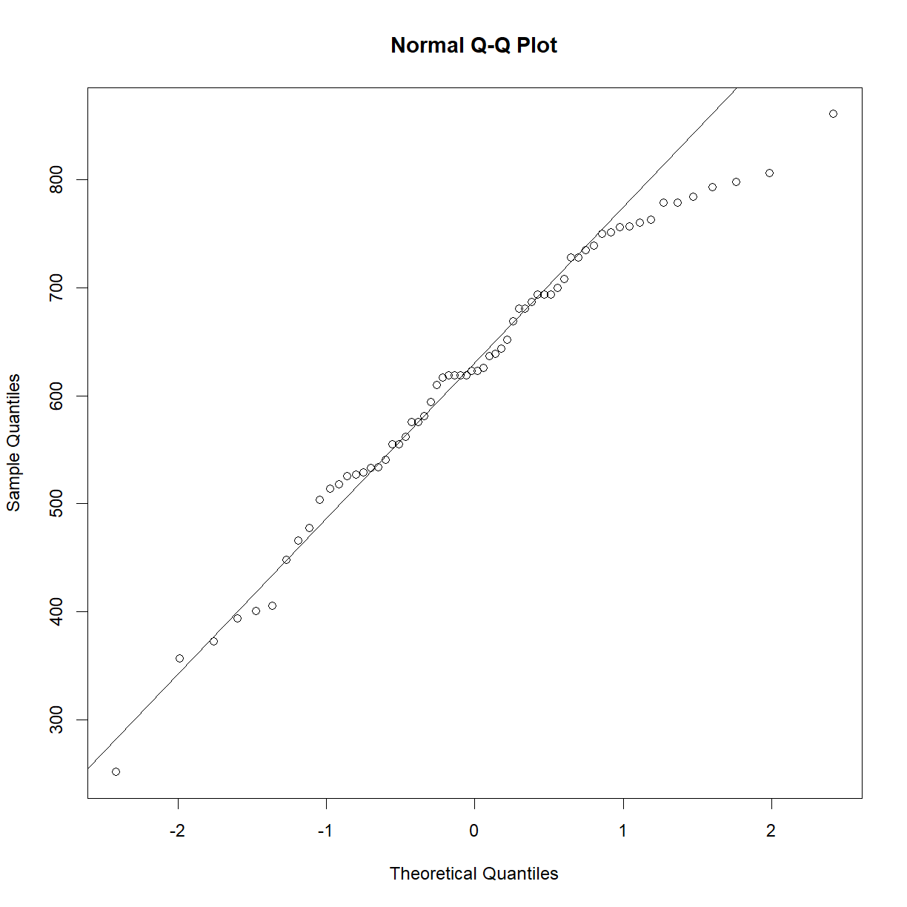
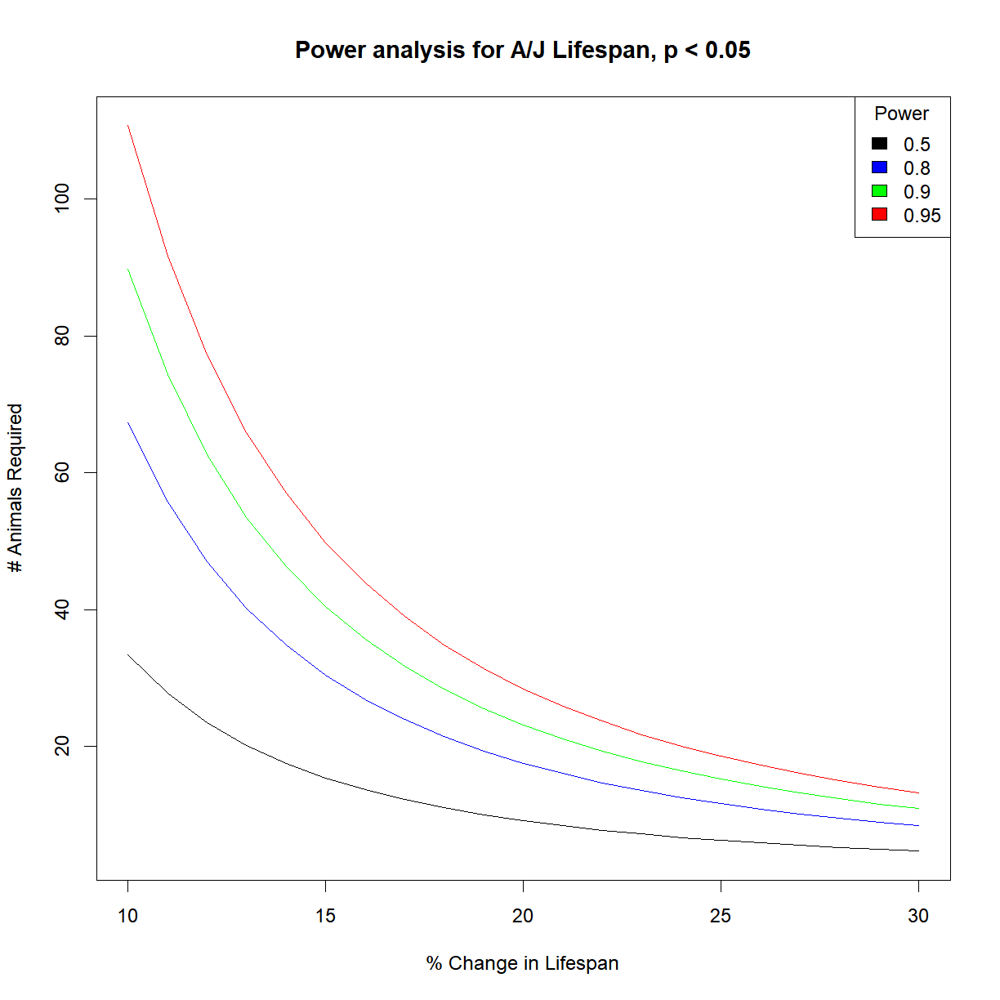
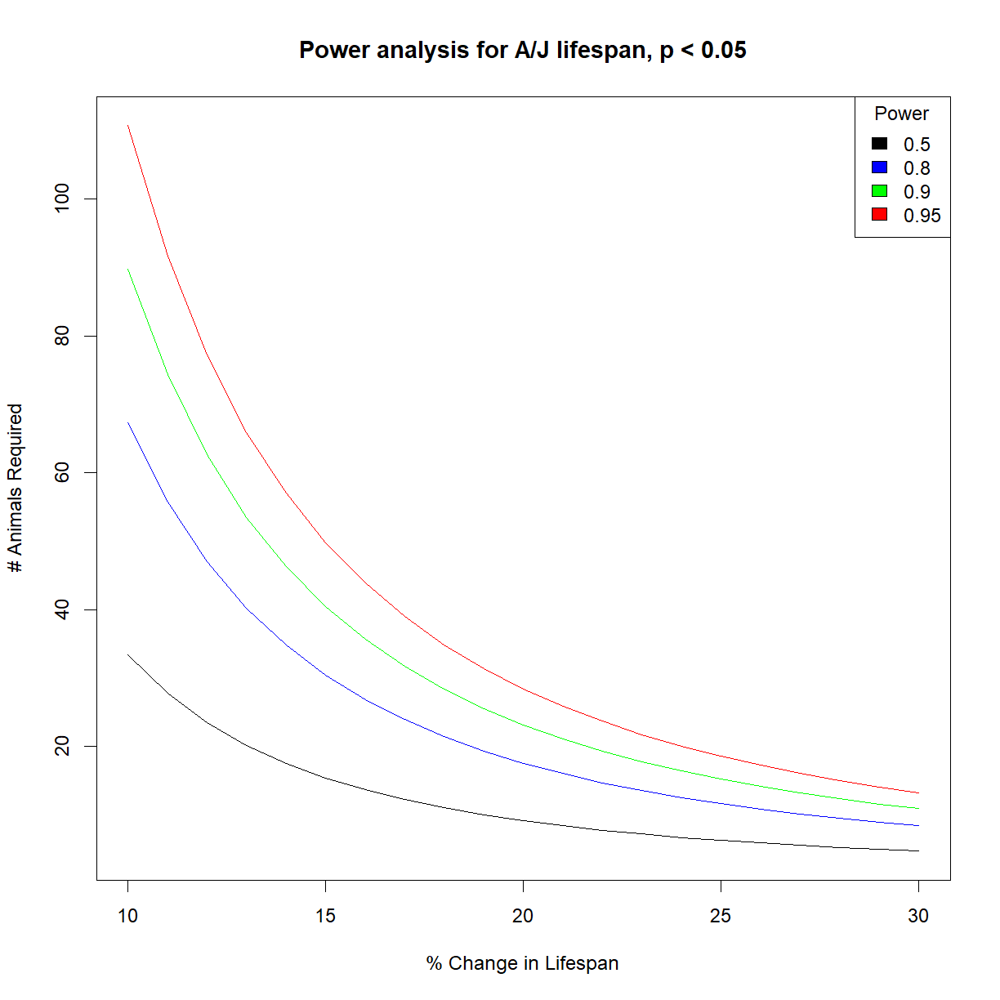
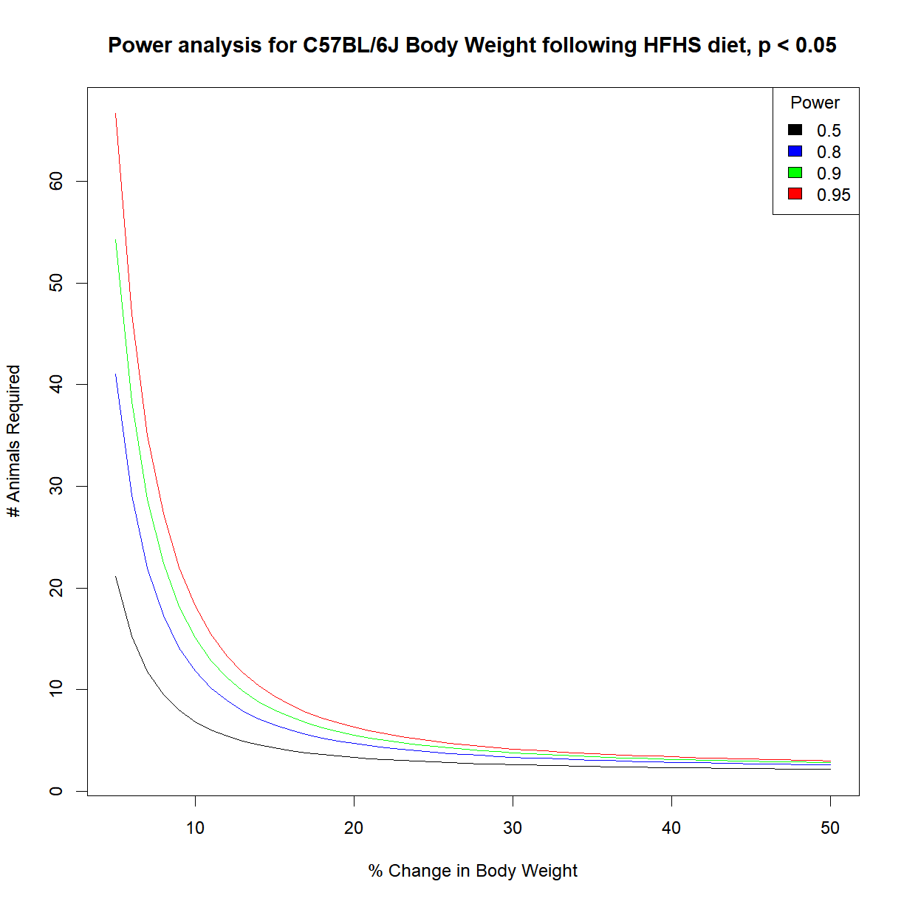
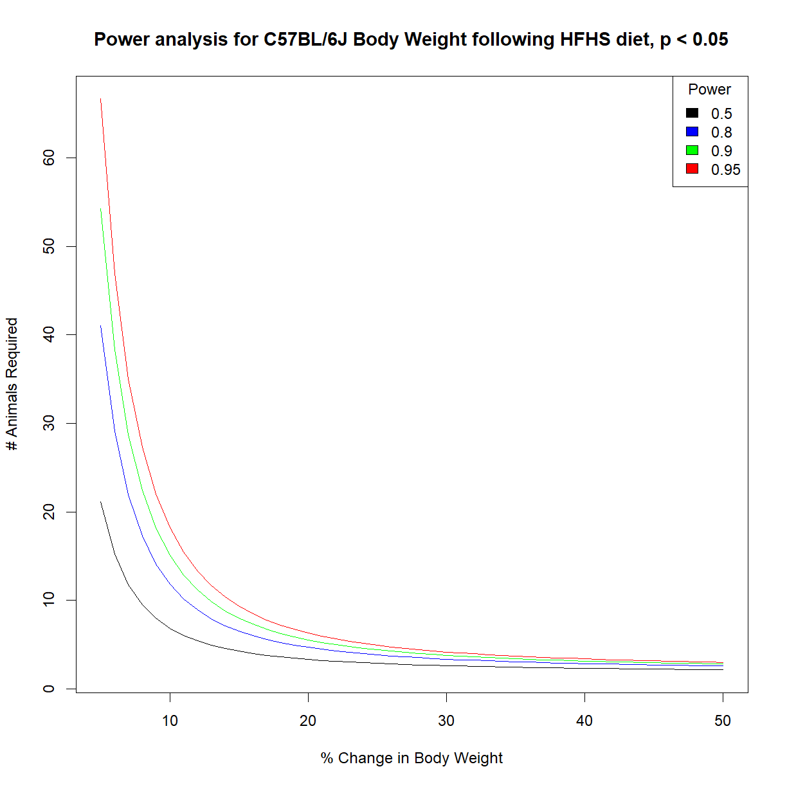

Power Analysis
Overview
Class Date: 9/20/2022 -- In Class
Teaching: 90 min
Exercises: 30 minQuestions
What is power analysis and what is its primary goal?
What aspects of an experimental design can be tweaked to prepare for statistical testing?
What is our primary tool for increasing power to detect?
Objectives
Identify the key aspects of distributions that contribute to statistical power.
Apply R power analysis tools to calculate appropriate sample size for a study.
Generate power analysis reference charts for a given experiment.
In Class
Increasingly, funding agencies are asking for detailed justification for experimental design decisions. An explicit request in these requirements is presentation of a power analysis to justify your study design, and particularly your selected sample size. While this has long been true for human studies, these requirements are not becoming standard for most studies that use mammalian species, including mice.
So what is power analysis? In essence, power analysis is a structured process for thinking through critical aspects of an upcoming set of experiments to ensure that your study is properly designed to test your hypothesis. The name “Power Analysis” comes from the statistical definition of power:
| The power of a statistical test is the probability that it will reject the null hypothesis when the alternative hypothesis is true. |
The power of a test depends on several factors, including the characteristics of the observed phenotype in a population, the expected difference between groups, and the size of the samples involved. As we will see, sample size is the primary tool that we have to adjust power. For this reason, the usual goal of conducting a power analysis is to determine the sample size needed to test a specific hypothesis with a given statistical test.
The conceptual basis for power analysis
There are several possible outcomes when we collect a sample and run a statistical test to evaluate a hypothesis. There is some truth about our population that we are trying to detect: either the null hypothesis is true, or the alternative hypothesis is true. Once we conduct our test, there are two possible outcomes: either we accept the null hypothesis, or we reject it in favor of the alternative hypothesis. We can lay out the possible scenarios in a table:
| Truth Table | \(H_0\) True | \(H_1\) True |
|---|---|---|
| Accept \(H_0\) | Correct | Type II Error (\(\beta\)) |
| Reject \(H_0\) | Type I Error (\(\alpha\)) | Correct |
Each quadrant has a specific meaning to our experiment:
-
Correct acceptance of \(H_0\) (\(1 - \alpha\)). The upper-left quadrant is the boring case where there is no difference present, and we correctly conclude that this is the case.
-
Type I Error (\(\alpha\)). In the lower-left is the probability that we make an error and reject the null hypothesis when it is, in fact, true.
-
Type II Error (\(\beta\)). In the upper-right is the probability that we make an error and accept the null hypothesis when the alternative hypothesis is true.
-
Correct rejection of \(H_0\) (\(power\); \(1 - \beta\)). Finally, in the lower-right we have the situation where we correctly reject the null hypothesis in favor of the alternative when the alternative is, in fact, true. The probability associated with this outcome is called power. Because the top and bottom possibility in each column are direct negations, the probabilities in each column sum to 1. Therefore:
\(power = 1 - \beta\)
While we cannot eliminate the possibility of committing either type of error, we can reduce the probability. A well-designed experiment will explicitly define the chance of committing either a Type I or Type II Error.
-
Limiting Type I Errors. Because the P-value represents the probability that the observed sample mean came from the null sampling distribution, it tells us directly our chance of committing a Type I Error. Thus, we generally control Type I Errors explicitly by choosing a value for \(\alpha\) and only accepting P-values that fall below that threshold.
-
Limiting Type II Errors. Type II Errors are the failure to detect a difference in the observed phenotype when a difference exists in the sampled populations. Because Type II Errors are not explicitly built into the statistical testing process like the \(\alpha\) threshold used to control Type I Errors, they often go uncontrolled and unremarked upon. Deliberately controlling Type II Errors requires more work up front to ensure a careful study design. As we will see, there are a couple of ways to control Type II Errors, but our primary tool is in the selection of sample size.
To better understand these concepts, let’s look at them visually by examining our distributions. To set up our thought experiment, we want to consider the situation where a real difference exists (because this is what we are ultimately interested in detecting):

The sampling means for two distributions are separated by some distance (\(\Delta\)). This difference combined with the variance in each distribution defines what fraction of the distributions overlap.
Recall that these distributions are plotted as probability density (y-axis) that the mean value of the phenotype of interest within a sample can take any given value (x-axis). As a consequence, the total area under each distribution curve will always sum to 1, and sub areas defined by a phenotype threshold value represent the probability that any given sample mean will take a value above or below that threshold value. We can use this feature to visualize the process of conducting a hypothesis test.
The The dotted vertical line represents our selected P-value threshold (\(\alpha\)): if the sample mean from the compared sample falls within the threshold (between the dotted lines), we accept the null hypothesis. If it falls outside the threshold, we reject the null hypothesis in favor of the alternative. \(\alpha\) is visually represented as the area under the distribution curve of the null distribution that falls outside the threshold value for the sample mean (blue shaded area). Because the above figure represents a two-sided statistical test, we include areas at both ends of the sampling distribution, each of which is \(\alpha/2\) so that the combined area sums to \(\alpha\).
In contrast to \(\alpha\), \(\beta\) represents the fraction of the area under the second distribution that falls within the threshold sample means. This area is shaded dark red in the above image. If a measured sample mean falls within this range, we will (erroneously) accept the null hypothesis (i.e. the distribution means are the same) when the alternative hypothesis (i.e. the distribution means are different) is true. \(Power\) is the inverse of \(\beta\): the probability that we will correctly reject the null hypothesis when the alternative hypothesis is true. Visually, \(power\) is the area under the second distribution that falls outside of the threshold range defined by \(\alpha\).
Note that the sampling distributions are theoretically continuous across the entire range of possible sampling mean values. Therefore, we cannot simultaneously eliminate both Type I Errors (\(\alpha\)) and Type II Errors (\(\beta\)). The goal of power analysis is to maximize \(power\) and minimize Type II Errors (\(\beta\)) for our selected \(\alpha\), within the practical restraints of our study (e.g. resources, ethics surrounding animals use).
What variables are important for minimizing error?
What are the key features of the above distributions that can be manipulated to control our two types of error? As noted above, we control \(\alpha\) directly by setting our desired value as the P-value threshold (or significance level). Looking at the above distributions, it turns out that we have five features that are inter-dependent:
-
Population standard deviations: \(\sigma_1\), \(\sigma_2\)
-
Sample size: \(n_1\), \(n_2\)
- Effect size: This is the minimum difference in means that we would like to detect, and has two common symbolic representations.
- Difference in means: \(\Delta = \mu_2 - \mu_1\)
- Cohen’s d: \(d = \frac{\sqrt{2}*(\mu_2 - \mu_1)}{\sqrt{\sigma_1^2 + \sigma_2^2}}\).
-
Significance level: \(\alpha\)
- Power: \(1 - \beta\)
These features are a closed system \(\rightarrow\) If we know 4, we can calculate the 5th. This means that we can select our desired \(\alpha\) and \(\beta\) if we can control the other 3 features.
Of these 3 remaining features, 2 are generally defined by biological features of our system:
-
Effect size is determined by what change in sampling mean represents a biologically meaningful difference. This will vary widely based on the phenotype that you are interested in (e.g. a 10% increase may be something to celebrate when looking at lifespan, while a 100% increase in a transcript level may be borderline for relevance when looking at gene expression).
-
Standard deviations of the sampled populations are a feature of your phenotype of interest.
Estimating population parameters
The goal of power analysis is to design the paramets of a study before collecting sample data. In many situations, we won’t know the mean or standard deviation of our population for a given phenotype. You will almost never know both parameters for both your control and test populations.
It is necessary to have both values to conduct a power analysis. You can often estimate these parameters in one of two ways:
- Use published data on your phenotype of interest in your control population.
- Conduct a small pilot study and use the sample mean and standard deviation as estimates of the mean and standard deviation for your control population.
We can then make two assumptions in order to perform our power analysis:
- The sample standard deviation approximates the population standard derivation.
- The independent variable will only affect the population mean without affecting standard deviation.
That leaves sample size as our only real tool to control errors. Since we typically set \(\alpha = 0.05\) by convention, what we are left with is a direct relationship between \(power\) and sample size (\(n\)). By examining the impact of sample size on the distribution shapes and relationships, we can see how this relationship holds:

By increasing sample size we reduce the variance in the sampling distribution. For a given population with a specified \(\Delta\) and \(\alpha\), increasing \(n\) reduces the overlap in the sampling distributions, thus lowering the probability of making a Type II Error (\(\beta\)) and increasing the power to detect a real difference in distribution means, if one exists.
In reality, effect size is another parameter that can be manipulated in the effort to maximize power while minimizing resource expenditure. You might, for instance, decide opt for a larger power to detect a bigger effect size. The interplay between these various factors can be intuitively manipulated using a visualization tool at R Psychologist.
Calculating power in R
The pwr package in R has power analysis tools for the t-test and a number of other statistical tests. Let’s explore the t-test power tool using our mouse body weight data. First, let’s install and load the package, and load our data set:
# install and load the "pwr" package
install.packages("pwr")
package 'pwr' successfully unpacked and MD5 sums checked
The downloaded binary packages are in
C:\Users\sutph\AppData\Local\Temp\RtmpWsECuP\downloaded_packages
library("pwr")
Warning: package 'pwr' was built under R version 4.1.3
# load high-fat high-sucrose mouse diet data
data.diet <- read.delim("./data/b6.aj.hfhs.diet.txt")
The power t-test function is pwr.t.test(). Let’s examine the inputs first:
?pwr.t.test
The function requires us to input the features described above that define power:
- n = sample size
- d = Cohen’s d (a measure of relative effect size, which incorporates mean and standard deviation)
- \(\alpha\) = significance level (aka probability of committing a Type I Error)
- \(power = 1 - \beta\) (where \(\beta\) is the probability of committing a Type II Error))
It also requires two arguments that define the type of t-test we intend to use in our analysis. We generally want type = "two.sample" and alternative = "two.sided", unless there is a reason specific to your study design to make a different selection (e.g. you only care about a result where the test population has a higher mean than the control population, in which case you would choose alternative = "greater").
For the first 4 parameters, pwr.t.test() will calculate any 1 of the 4 when you provide the other 3. Enter values for 3 arguments, and set the argument that you would like the function to calculate equal to NULL.
For our purposes, we want to determine the sample size needed to detect a 20% change in body weight with 95% power at a 0.05 significance level in C57BL/6J mice. We will use our diet dataset as a pilot data to estimate the population mean and standard deviation.
First, pull the subset for C57BL/6J mice:
b6 <- data.diet[data.diet$strain == "C57BL/6J",]
Because the power analysis is based on a t-test, we must be sure that we satisfy the assumptions of the t-test in order for the resulting power analysis to be valid. Recall that the data is close to normal:
qqnorm(b6$bw_start)
qqline(b6$bw_start)

Next we need to define the parameters for the t-test and calculate the necessary input arguments. Then we can plug them into pwr.t.test() and see what it tells us. Since we would like to determine sample size, we need to calculate the other 3 inputs:
# define our desired parameters
power <- 0.95 # we want a 95% chance
beta <- 1 - power
change <- 0.2 # to detect a 20% change in body weight
alpha <- 0.05 # at a 0.05 significance level
# use our available diet dataset as pilot data to estimate
# the distribution shape parameters (mean, sd)
mu <- mean(b6$bw_start)
sigma <- sd(b6$bw_start)
# from the mean and the desired percent change we can
# calculate the effect size
delta <- change*mu
# calculate Cohen's d; since we are assuming that standard
# deviation is not affected, this just collapses to:
d <- delta/sigma
# calculate sample size, enter the other values
n.t <- pwr.t.test(n = NULL,
d = d,
sig.level = alpha,
power = power,
type = "two.sample",
alternative = "two.sided")
n.t
Two-sample t test power calculation
n = 6.776594
d = 2.145835
sig.level = 0.05
power = 0.95
alternative = two.sided
NOTE: n is number in *each* group
# we can pull out sample size from the output object
n.t$n
[1] 6.776594
So, we only need to test ~7 mice per groups to detect a 20% change in body weight for C57BL/6J mice.
Changing strains
Calculate the sample size needed to detect a 10% change in A/J body weight with 95% power at 0.05 significance.
Solution
# grab the data subset for A/J mice aj <- data.diet[data.diet$strain == "A/J",] # define our desired parameters: power <- 0.95 # we want a 95% chance beta <- 1 - power change <- 0.1 # to detect a 20% change in body weight alpha <- 0.05 # at a 0.05 significance level # we next use our available data to estimate the # distribution shape parameters (mean, sd) mu <- mean(aj$bw_start) sigma <- sd(aj$bw_start) # from the mean and the desired percent change we can # calculate the effect size delta <- change*mu # calculate Cohen's d; since we are assuming that # standard deviation is not affected, this just # collapses to: d <- delta/sigma # calculate sample size, enter the other values n.t <- pwr.t.test(n = NULL, d = d, sig.level = alpha, power = power, type = "two.sample", alternative = "two.sided") n.t$n[1] 22.44183The smaller effect size desired means that we need quite a bit higher sample size to detect the change in A/J mice.
Should you always use equal sample sizes between groups?
Using equal samples sizes between groups maximizes power to detect a desired effect when comparing populations that have identical variance (e.g. \(\sigma_1 = \sigma_2\)). Many tools assume equal sample sizes, and this is a good rule of thumb for most situations.
However, different sample sizes can be helpful in some situations. Comparing samples with unequal variance for instance:
If \(\sigma_2 = 2\sigma_1\), use \(n_2 = 2n_1\) animals to maximize power.
When testing an expensive drug, use more controls and fewer treated animals. You can achieve the same power with more animals but use a lot less drug.
When testing multiple drugs and comparing to the same control population, increase power by increasing control n only. While each individual comparison between control and treatment group will not benefit as much, the overall number of animals needed in the study will be lower, and you get away with using less of each drug.
When studying a rare disease, your disease population will often have a low n. Use more control group samples to increase power.
Using t-test power analysis in non-normal populations to calculate minimum sample size
What about data that does not meet the normality assumption of the t-test? There are more sophisticated ways to handle this type of data, which you will look at On Your Own, but the t-test power calculation is much simpler and still gives a good ballpark estimate. In face, this is probably the most common method for running power analyses in non-normal data, despite the violation of the normality assumption. The estimate that it gives is still useful, just treat sample size estimates as a bare minimum, at best, and increase your numbers according to how far from a normal distribution you data is.
To illustrate, let’s say we want to move to the next step and determine the impact of high-fat high-sucrose diet on mouse lifespan. Let’s design an experiment to determine whether the high-fat, high-sucrose diet affects lifespan in C57BL/6J. We need to detect a 20% change in lifespan at 95% power. We have pilot lifespan data from a published inbred strain survey study in the file inbred.lifespan.txt.
First load the data and take a look:
# load data
data.surv <- read.delim("./data/inbred.lifespan.txt")
# summarize data structure and examine strain list
str(data.surv)
'data.frame': 1881 obs. of 5 variables:
$ strain : chr "129S1/SvImJ" "129S1/SvImJ" "129S1/SvImJ" "129S1/SvImJ" ...
$ sex : chr "f" "f" "f" "f" ...
$ animal_id : chr "1" "2" "3" "4" ...
$ lifespan_days: int 616 763 770 987 673 920 680 483 821 938 ...
$ censor : int 0 0 0 0 0 0 0 0 0 0 ...
unique(data.surv$strain) # generate strain list
[1] "129S1/SvImJ" "A/J" "BALB/cByJ"
[4] "BTBR T+ tf/J" "BUB/BnJ" "C3H/HeJ"
[7] "C57BL/10J" "C57BL/6J" "C57BLKS/J"
[10] "C57BR/cdJ" "C57L/J" "CAST/EiJ"
[13] "CBA/J" "DBA/2J" "FVB/NJ"
[16] "KK/HlJ" "LP/J" "MOLF/EiJ"
[19] "MRL/MpJ" "NOD.B10Sn-H2<b>/J" "NON/ShiLtJ"
[22] "NZO/HlLtJ" "NZW/LacJ" "P/J"
[25] "PL/J" "PWD/PhJ" "RIIIS/J"
[28] "SJL/J" "SM/J" "SWR/J"
[31] "WSB/EiJ"
# grab subset of lifespan data for C57BL/6J mice.
surv.b6 <- data.surv[data.surv$strain %in% "C57BL/6J",]
Okay, we are in business. Let’s see if the data is normal.
qqnorm(surv.b6$lifespan_days)
qqline(surv.b6$lifespan_days)

That actually looks pretty good for survival data. Certainly good enough that we don’t need to worry too much about normality assumptions, but we should still treat our t-test samples sizes conservatively, since survival data violates other t-test assumptions.
# set desired power and significance
alpha <- 0.05
power <- 0.95
beta <- 1 - power
change <- 0.2
# we next use our pilot data to estimate the distribution shape parameters (mean, sd)
mu <- mean(surv.b6$lifespan_days)
sigma <- sd(surv.b6$lifespan_days)
# from the mean and the desired percent change we can calculate the effect size
delta <- change*mu
# t-test
n.t <- pwr.t.test(n=NULL,d=delta/sigma,sig.level=alpha,power=power,type="two.sample",alternative="two.sided")
n.t$n
[1] 29.94459
That’s much bigger than the sample size needed for body weight! Lifespan has much higher variability than body weight in most species, so the ability to detect a similar size change requires a much larger sample size to achieve the same power at the same significance level.
Changing strains – lifespan edition
Determine the sample size needed to detect a 10% change in A/J lifespan at 90% power with significance level 0.01.
Solution
First load the data and take a look:
# load data data.surv <- read.delim("./data/inbred.lifespan.txt") # grab subset of lifespan data for C57BL/6J mice. surv.aj <- data.surv[data.surv$strain %in% "A/J",] # check for normality qqnorm(surv.aj$lifespan_days) qqline(surv.aj$lifespan_days)
Pretty good! On to the power
# set desired power and significance alpha <- 0.01 power <- 0.90 beta <- 1 - power change <- 0.1 # we next use our pilot data to estimate the distribution shape parameters (mean, sd) mu <- mean(surv.aj$lifespan_days) sigma <- sd(surv.aj$lifespan_days) # from the mean and the desired percent change we can calculate the effect size delta <- change*mu # t-test n.t <- pwr.t.test(n=NULL,d=delta/sigma,sig.level=alpha,power=power,type="two.sample",alternative="two.sided") n.t$n[1] 127.356That’s a lot of mice! Decreasing the detectable change and the significance level had a big impact even though we reduced power to detect a bit.
Generating power reference charts
The previous examples give us an idea of what to expect when we have a clear idea about our desired effect size, power, and significance level going in. Okay, so we know that with 30 C57BL/6J mice per group, we have 95% power to detect a 20% change. But what power do we have to detect a 30% change? How much do we need to increase the sample size to have the same power to detect a 10% change?
It is often useful, particularly in early-stage planning, to have an idea of what the relationship looks like between sample size, power, and effect size. We can generate useful power reference charts by by repeating the power analysis to calculate sample size requirements over a range of power values and plotting the outcome.
# set desired change and significance
alpha <- 0.05
change <- 0.2
# we next use our pilot data to estimate the distribution shape parameters (mean, sd)
mu <- mean(surv.b6$lifespan_days)
sigma <- sd(surv.b6$lifespan_days)
# from the mean and the desired percent change we can calculate the effect size
delta <- change*mu
# set up a vector with a range of values for power
power.vec <- seq(0.5,0.99,0.01)
# initialize an empty vector with the same length as power where we will store calculated
# sample size values
n.vec <- numeric(length = length(power.vec))
# cycle through all power values using a for loop
# and calculate n for each
for (i.pwr in 1:length(power.vec)) {
# grab the current power value
power.c <- power.vec[i.pwr]
# display current iteration
print(paste("Calculating n for power",power.c))
# calculate sample size for current power
pwr.test.c <- pwr.t.test(n=NULL,d=delta/sigma,sig.level=alpha,power=power.c,
type="two.sample",alternative="two.sided")
# save value to sample size vector
n.vec[i.pwr] <- pwr.test.c$n
}
[1] "Calculating n for power 0.5"
[1] "Calculating n for power 0.51"
[1] "Calculating n for power 0.52"
[1] "Calculating n for power 0.53"
[1] "Calculating n for power 0.54"
[1] "Calculating n for power 0.55"
[1] "Calculating n for power 0.56"
[1] "Calculating n for power 0.57"
[1] "Calculating n for power 0.58"
[1] "Calculating n for power 0.59"
[1] "Calculating n for power 0.6"
[1] "Calculating n for power 0.61"
[1] "Calculating n for power 0.62"
[1] "Calculating n for power 0.63"
[1] "Calculating n for power 0.64"
[1] "Calculating n for power 0.65"
[1] "Calculating n for power 0.66"
[1] "Calculating n for power 0.67"
[1] "Calculating n for power 0.68"
[1] "Calculating n for power 0.69"
[1] "Calculating n for power 0.7"
[1] "Calculating n for power 0.71"
[1] "Calculating n for power 0.72"
[1] "Calculating n for power 0.73"
[1] "Calculating n for power 0.74"
[1] "Calculating n for power 0.75"
[1] "Calculating n for power 0.76"
[1] "Calculating n for power 0.77"
[1] "Calculating n for power 0.78"
[1] "Calculating n for power 0.79"
[1] "Calculating n for power 0.8"
[1] "Calculating n for power 0.81"
[1] "Calculating n for power 0.82"
[1] "Calculating n for power 0.83"
[1] "Calculating n for power 0.84"
[1] "Calculating n for power 0.85"
[1] "Calculating n for power 0.86"
[1] "Calculating n for power 0.87"
[1] "Calculating n for power 0.88"
[1] "Calculating n for power 0.89"
[1] "Calculating n for power 0.9"
[1] "Calculating n for power 0.91"
[1] "Calculating n for power 0.92"
[1] "Calculating n for power 0.93"
[1] "Calculating n for power 0.94"
[1] "Calculating n for power 0.95"
[1] "Calculating n for power 0.96"
[1] "Calculating n for power 0.97"
[1] "Calculating n for power 0.98"
[1] "Calculating n for power 0.99"
# visualize the relationship between power and animal number
plot(n.vec,power.vec, type = "l",
ylab = "Power to detect 20% change in lifespan", xlab = "# Animals Required")

The relationship between sample size and power is not linear. This chart illustrates how sample size has diminishing returns when trying to improve power. Increasing sample size from 10 to 20 gives you a ~30% boost in power, while increasing sample size from 20 to 30 only gives an additional ~12%.
We can go a step further and look at the relationship between effect size, power, and sample size by adding a second, nested for loop:
# set desired significance
alpha <- 0.05
# we next use our pilot data to estimate the distribution shape parameters
# (mean, sd)
mu <- mean(surv.b6$lifespan_days)
sigma <- sd(surv.b6$lifespan_days)
# Define vectors containing the range of effect size and power that we are interested in
change.vec <- seq(0.1,0.3,0.01)
power.vec <- c(0.5,0.8,0.9,0.95)
# initialize a numeric matrix of the proper size to capture different effect sizes (in rows)
# and powers (in columns)
n.mat <- matrix(NA, nrow = length(change.vec), ncol = length(power.vec))
# cycle through all power and change values using a for loop
# and calculate n for each
for (i.pwr in 1:length(power.vec)) {
# grab current value for power
power.c <- power.vec[i.pwr]
# print current step
print(paste("Calculating sample size for power",power.c))
for (i.change in 1:length(change.vec)) {
# grab the current effect size
change.c <- change.vec[i.change]
# calculate delta from mu and current change value
delta.c <- change.c*mu
# calculate sample size for current power
pwr.test.c <- pwr.t.test(n=NULL,d=delta.c/sigma,sig.level=alpha,power=power.c,
type="two.sample",alternative="two.sided")
# save value to sample size vector
n.mat[i.change, i.pwr] <- pwr.test.c$n
}
}
[1] "Calculating sample size for power 0.5"
[1] "Calculating sample size for power 0.8"
[1] "Calculating sample size for power 0.9"
[1] "Calculating sample size for power 0.95"
# list colors for plot
col.list <- c("black","blue","green","red")
# setup the plot limits to include all
x.lim <- c(min(100*change.vec),max(100*change.vec))
y.lim <- c(min(n.mat),max(n.mat))
# initialize empty plot with defined limits
plot(NA, xlim = x.lim, ylim = y.lim,
xlab = "% Change in Lifespan", ylab = "# Animals Required",
main = "Power analysis for C57BL/6J lifespan, p < 0.05")
# add a legend for the power values
legend("topright", legend = power.vec, fill = col.list, title="Power")
# finally, add a separate line for each power level
for (i.pwr in 1:length(power.vec)) {
lines(100*change.vec,n.mat[,i.pwr], col = col.list[i.pwr])
}

How much does strain background matter for power?
We now have power data for C57BL/6J mice. How different are the power profiles for A/J mice?
Generate sample size vs. effect size charts for the same range of power values that we used above (50%, 80%, 90%, 95%).
Solution
# load power library library("pwr") # load data and grab aj data subset data.surv <- read.delim("./data/inbred.lifespan.txt") surv.aj <- data.surv[data.surv$strain == "A/J",] # set desired significance alpha <- 0.05 # we next use our pilot data to estimate the distribution shape parameters (mean, sd) mu <- mean(surv.aj$lifespan_days) sigma <- sd(surv.aj$lifespan_days) # Define vectors containing the range of effect size and power that we are interested in change.vec <- seq(0.1,0.3,0.01) power.vec <- c(0.5,0.8,0.9,0.95) # initialize a numeric matrix of the proper size to capture different effect sizes (in rows) # and powers (in columns) n.mat <- matrix(NA, nrow = length(change.vec), ncol = length(power.vec)) # cycle through all power and change values using a for loop # and calculate n for each for (i.pwr in 1:length(power.vec)) { # grab current value for power power.c <- power.vec[i.pwr] # print current step print(paste("Calculating sample size for power",power.c)) for (i.change in 1:length(change.vec)) { # grab the current effect size change.c <- change.vec[i.change] # calculate delta from mu and current change value delta.c <- change.c*mu # calculate sample size for current power pwr.test.c <- pwr.t.test(n=NULL, d=delta.c/sigma, sig.level=alpha, power=power.c, type="two.sample", alternative="two.sided") # save value to sample size vector n.mat[i.change, i.pwr] <- pwr.test.c$n } }[1] "Calculating sample size for power 0.5" [1] "Calculating sample size for power 0.8" [1] "Calculating sample size for power 0.9" [1] "Calculating sample size for power 0.95"# list colors for plot col.list <- c("black","blue","green","red") # setup the plot limits to include all x.lim <- c(min(100*change.vec),max(100*change.vec)) y.lim <- c(min(n.mat),max(n.mat)) # initialize empty plot with defined limits plot(NA, xlim = x.lim, ylim = y.lim, xlab = "% Change in Lifespan", ylab = "# Animals Required", main = "Power analysis for A/J lifespan, p < 0.05") # add a legend for the power values legend("topright", legend = power.vec, fill = col.list, title="Power") # finally, add a separate line for each power level for (i.pwr in 1:length(power.vec)) { lines(100*change.vec,n.mat[,i.pwr], col = col.list[i.pwr]) }
It looks like C57BL/6J and A/J mice have nearly identical power charts. Then again, the mean and standard deviation appear to be similar and approximately proportional to one another:
mu.b6 <- mean(data.diet$bw_start[data.diet$strain == "C57BL/6J"]) sigma.b6 <- sd(data.diet$bw_start[data.diet$strain == "C57BL/6J"]) mu.aj <- mean(data.diet$bw_start[data.diet$strain == "A/J"]) sigma.aj <- sd(data.diet$bw_start[data.diet$strain == "A/J"]) mu.b6/sigma.b6[1] 10.72917mu.aj/sigma.aj[1] 11.01157
Because the importance of “effect size” in determining power is proportional to the relative mean and variance (i.e. standard deviation) in the population, it is no surprise that the power numbers are similar when mean and standard deviation is similar. After all, we defined all of the other relevant parameters (\(\alpha\), \(power\)) except for \(n\), which is what we are trying to calculate. A broader examination of mouse strains with more deviant lifespan distributions may produce different outcomes.
Is power to detect lifespan different for males and females?
We looked at the combined population of male and female C57BL/6J mice. How different is the power prediction for each sex independently?
Calculate the sample size vs. effect size charts for 95% power for male and female C57BL/6J mice and present them on the same chart for comparison.
What might account for differences in sample size estimates (if any)?
Solution
# load power library library("pwr") # load data and grab aj data subset data.surv <- read.delim("./data/inbred.lifespan.txt") surv.b6.f <- data.surv[data.surv$strain == "C57BL/6J" & data.surv$sex == "f",] surv.b6.m <- data.surv[data.surv$strain == "C57BL/6J" & data.surv$sex == "m",] # set desired significance and power alpha <- 0.05 power <- 0.95 # we next use our pilot data to estimate the distribution shape parameters (mean, sd) mu.f <- mean(surv.b6.f$lifespan_days) sigma.f <- sd(surv.b6.f$lifespan_days) mu.m <- mean(surv.b6.m$lifespan_days) sigma.m <- sd(surv.b6.m$lifespan_days) # Define vector containing the range of effect size that we are interested in change.vec <- seq(0.1,0.3,0.01) # initialize a numeric matrix of the proper size to capture different effect sizes (in rows) # and sex (in columns) n.mat <- matrix(NA, nrow = length(change.vec), ncol = 2) # cycle through all power and change values using a for loop # and calculate n for each for (i.change in 1:length(change.vec)) { # grab current value for change change.c <- change.vec[i.change] # print current step print(paste("Calculating sample size for change",change.c)) # calculate delta from mu and current change value delta.f.c <- change.c*mu.f delta.m.c <- change.c*mu.m # calculate sample size for current power pwr.test.f.c <- pwr.t.test(n=NULL, d=delta.f.c/sigma.f,sig.level=alpha, power=power, type="two.sample",alternative="two.sided") pwr.test.m.c <- pwr.t.test(n=NULL, d=delta.m.c/sigma.m,sig.level=alpha, power=power, type="two.sample",alternative="two.sided") # save value to sample size vector n.mat[i.change, 1] <- pwr.test.f.c$n n.mat[i.change, 2] <- pwr.test.m.c$n }[1] "Calculating sample size for change 0.1" [1] "Calculating sample size for change 0.11" [1] "Calculating sample size for change 0.12" [1] "Calculating sample size for change 0.13" [1] "Calculating sample size for change 0.14" [1] "Calculating sample size for change 0.15" [1] "Calculating sample size for change 0.16" [1] "Calculating sample size for change 0.17" [1] "Calculating sample size for change 0.18" [1] "Calculating sample size for change 0.19" [1] "Calculating sample size for change 0.2" [1] "Calculating sample size for change 0.21" [1] "Calculating sample size for change 0.22" [1] "Calculating sample size for change 0.23" [1] "Calculating sample size for change 0.24" [1] "Calculating sample size for change 0.25" [1] "Calculating sample size for change 0.26" [1] "Calculating sample size for change 0.27" [1] "Calculating sample size for change 0.28" [1] "Calculating sample size for change 0.29" [1] "Calculating sample size for change 0.3"# setup the plot limits to include all x.lim <- c(min(100*change.vec),max(100*change.vec)) y.lim <- c(min(n.mat),max(n.mat)) # initialize empty plot with defined limits plot(NA, xlim = x.lim, ylim = y.lim, xlab = "% Change in Lifespan", ylab = "# Animals Required", main = "Power analysis for C57BL/6J Lifespan, p < 0.05") # add a legend for the power values legend("topright", legend = c("female", "male"), fill = c("red","blue"), title="Sex") # finally, add a separate line for each power level lines(100*change.vec,n.mat[,1], col = "red") lines(100*change.vec,n.mat[,2], col = "blue")
Why is it so much more difficult to detect a lifespan change in female mice? Let’s take a look at the population parameter estimate:
mu.f[1] 812.9375mu.m[1] 894.2812sigma.f[1] 222.6933sigma.m[1] 113.8831
The standard deviation in female lifespan is nearly double that of males. We need a substantially larger sample size to detect a change in a naturally variable population.
Power to detect dietary effects on body weight
Generate power charts for our ability to detect a change in body weight following a high-fat high-sucrose diet in C57BL/6J mice.
Solution
# load power library library("pwr") # load data and grab aj data subset data.diet <- read.delim("./data/b6.aj.hfhs.diet.txt") data.b6 <- data.diet[data.surv$strain == "C57BL/6J",] # set desired significance alpha <- 0.05 # we next use our pilot data to estimate the distribution shape parameters (mean, sd) mu <- mean(data.diet$bw_start) sigma <- sd(data.diet$bw_start) # Define vectors containing the range of effect size and power that we are interested in change.vec <- seq(0.05,0.5,0.01) power.vec <- c(0.5,0.8,0.9,0.95) # initialize a numeric matrix of the proper size to capture different effect sizes (in rows) # and powers (in columns) n.mat <- matrix(NA, nrow = length(change.vec), ncol = length(power.vec)) # cycle through all power and change values using a for loop # and calculate n for each for (i.pwr in 1:length(power.vec)) { # grab current value for power power.c <- power.vec[i.pwr] # print current step print(paste("Calculating sample size for power",power.c)) for (i.change in 1:length(change.vec)) { # grab the current effect size change.c <- change.vec[i.change] # calculate delta from mu and current change value delta.c <- change.c*mu # calculate sample size for current power pwr.test.c <- pwr.t.test(n=NULL,d=delta.c/sigma,sig.level=alpha,power=power.c, type="paired",alternative="two.sided") # save value to sample size vector n.mat[i.change, i.pwr] <- pwr.test.c$n } }[1] "Calculating sample size for power 0.5" [1] "Calculating sample size for power 0.8" [1] "Calculating sample size for power 0.9" [1] "Calculating sample size for power 0.95"# list colors for plot col.list <- c("black","blue","green","red") # setup the plot limits to include all x.lim <- c(min(100*change.vec),max(100*change.vec)) y.lim <- c(min(n.mat),max(n.mat)) # initialize empty plot with defined limits plot(NA, xlim = x.lim, ylim = y.lim, xlab = "% Change in Body Weight", ylab = "# Animals Required", main = "Power analysis for C57BL/6J Body Weight following HFHS diet, p < 0.05") # add a legend for the power values legend("topright", legend = power.vec, fill = col.list, title="Power") # finally, add a separate line for each power level for (i.pwr in 1:length(power.vec)) { lines(100*change.vec,n.mat[,i.pwr], col = col.list[i.pwr]) }
The variation in body weight is relatively small in C57BL/6J mice. Thus we can detect relatively small (10%) changes in body weight at relatively high power (90%) with only a few mice (~15).
Key Points
The goal of experimental design is to minimize hypothesis testing errors.
The primary tool for improving statistical power is sample size.
R has basic tools for power analysis in the
pwrpackage.